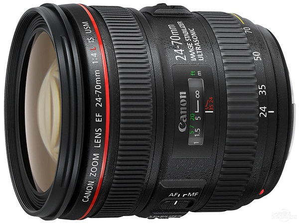

 EF 24-70mm f/4L IS USM是覆盖从24mm广角到70mm中远摄焦段的L级标准变焦镜头。广泛适用于风光、抓拍和人像等多种拍摄场景，通过操作变焦环还可以切换到微距模式※1，进行最大放大倍率约0.7倍的微距拍摄。在光学系统方面，最大光圈为F4的设计使镜头具备了小型轻量的特征，小巧的尺寸和重量易于随身携带。在光学结构方面，通过有效配置了2种非球面镜片和2片UD（超低色散）镜片，良好地补偿了多种像差。在最前端和最后端镜片的外侧表面还采用了防污氟镀膜，与镜头的防水滴防尘※2构造相配合，获得了高耐久性。镜头内部搭载了新设计的手抖动补偿机构IS影像稳定器，在通常拍摄时最大可获得相当于约4级快门速度的手抖动补偿效果。另外在微距模式下，可以作为双重IS影像稳定器发挥作用，同时应对倾斜抖动和平移抖动。在约0.7倍的最大放大倍率下，最大可获得相当于约2.5级快门速度的手抖动补偿效果。除通过环形USM超声波马达和内对焦方式实现迅速宁静的自动对焦拍摄外，采用圆形光圈还能让用户体验到美丽的虚化效果。
※1微距模式下无法使用增距延长管。
※2本镜头虽然具有一定的防水滴性能，但是如果在雨天拍摄时，请尽量不要淋湿。| 镜头焦距 | 24-70mm |
|---|---|
| APS-C画幅下的35mm规格换算焦距 *1 | 约38-112mm |
| 镜头结构 | 12组15片 |
| 光圈叶片 | 9片（圆形光圈） |
| 最小光圈 *2 | 22 |
| 最近对焦距离 | 约0.38米(微距模式时约0.2米) |
| 最大放大倍率 *3 | 约0.21倍(微距模式时约0.7倍) |
| 驱动系统 | 环形USM超声波马达 |
| 手抖动补偿效果 | 最大约4级 *4 |
| 滤镜直径 | 77毫米 |
| 最大直径及长度 | 约Φ83.4×93毫米 |
| 重量 | 约600克 |
光圈值：f/4
快门速度：1/400秒